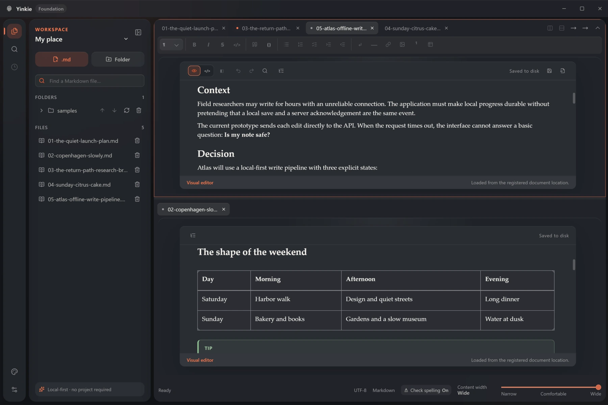
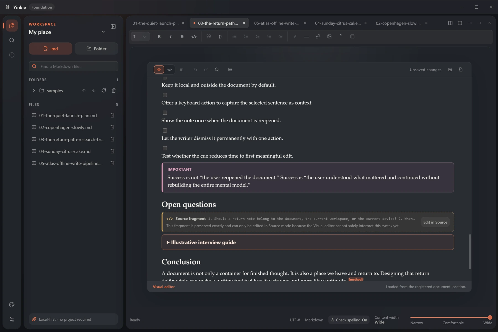
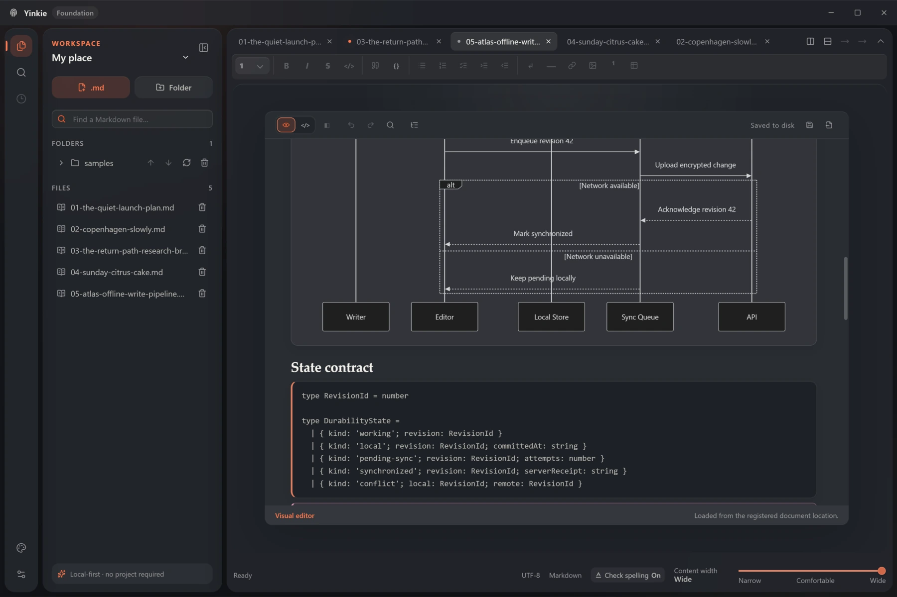

5.0
Yinkie Markdown
Yinkie's own dialect, with its full Markdown feature set and careful source preservation.
THE FREE VISUAL MARKDOWN EDITOR
Turn your notes and AI drafts into documents you enjoy working with. Edit visually, switch to Markdown when you need precision, and keep files you can take anywhere.
Website statistics and opt-out

FROM AI DRAFT TO YOUR DOCUMENT
Ask your AI assistant for Markdown: headings, lists, tables and code in a portable text format. Bring the result into Yinkie to read comfortably, refine the wording and work with it alongside your own notes.
Request your plan, research notes or documentation as Markdown and save the result as a .md file.
Open the file in Yinkie. Read the formatted document, edit it visually and check the source when you need to.
On Desktop, open multiple folders and documents in one workspace. Keep AI drafts, references and your own text close at hand.
Use the AI assistant you already like. Yinkie edits the Markdown you bring; AI generation happens in your chosen service.
MARKDOWN THAT FITS YOUR OTHER TOOLS
Yinkie works with several Markdown dialects and compatibility profiles. Choose the one your other editor supports for each document. Yinkie checks your text against that profile and points out elements that fall outside it.
5.0
Yinkie's own dialect, with its full Markdown feature set and careful source preservation.
0.31.2
Standard Markdown for editors that follow CommonMark without extra extensions.
0.29
Formal GFM, including tables, task lists and strikethrough, for tools that support this specification.
Reviewed 2026-08-27
A profile for .md files displayed in GitHub repositories, including GitHub-specific additions.
Keep an AI-assisted draft, a README and your personal notes in the profiles their destinations support. You can change a document's target or set a default for new files. Changing the profile does not silently rewrite your text.
Compatibility covers the selected Markdown syntax and structure. Appearance and editor-specific extensions can still differ.
01 / YINKIE DESKTOP
Bring independent files and folders into named workspaces. Keep research beside a draft, switch between contexts and find the paragraph you remember — without moving your files.
Combine folder roots and individual files around what you are working on.
Tabs and two editor groups put a draft and its reference side by side or one above the other.
Quick Open finds files. Workspace search finds text across your Markdown collection.
02 / VISUAL WHEN IT FITS. SOURCE WHEN IT MATTERS.
Some Markdown needs its original syntax. When Yinkie cannot safely represent a fragment visually, it preserves the source and gives you a clear way to edit it. Your document stays in your control.

03 / FROM EVERYDAY NOTES TO TECHNICAL DOCS
Build useful documents with tables, task lists, code, images and footnotes. Preview Mermaid diagrams on Desktop while keeping their editable definition in the Markdown file.

CHOOSE WHERE YOU WRITE
The same Markdown foundation, with tools that fit each environment.
For your everyday collection of notes, files and folders.
Available builds and platform details are listed on the official releases page.
For opening a document and getting straight to the words.
File access depends on your browser. When direct saving is unavailable, download a copy. Folder workspaces and Desktop history are not included.
Visual + Source · Plain Markdown · No account required today
FREE AT THE CORE
The application and its main functionality on Desktop and Web remain free. This is not a trial, and your core editing tools will not turn into a paid subscription.
Optional paid additions may appear in the future. Accounts, synchronization and other online services are not available yet; if introduced, they may have their own pricing. They do not change the free-core promise.
FAQ
No account is required for the current editor. Account-based services may be introduced later as optional additions.
Opening and editing a local document does not require uploading it to Yinkie. Remote images in a document are loaded only with your explicit permission.
Yes. Your content stays in ordinary Markdown files. Choose CommonMark, GFM or the GitHub repository profile to match the destination you use; Yinkie checks for compatibility issues. Appearance and editor-specific extensions may differ.
They share the core editor. Desktop adds native workspaces, workspace search, local history and file observation. Web works within browser file permissions and provides browser-local recovery.
Write to support@yinkie.com or use the public GitHub issues. When sharing an example or screenshot publicly, use fictional content and remove personal information.
Start with a document. Keep the freedom of Markdown.
When enabled, statistics measure page views, link clicks and source/campaign categories. A temporary ID connects events only within one opening of this page; there is no persistent visitor ID or analytics cookie.
Only your opt-out choice is saved in this browser. It has no expiry. Opting out stops future sending and pending retries; it does not erase events already accepted by the server. These statistics are separate from app usage and download counts.
Collection is not enabled on this site yet. You can save your opt-out now. Statistics are on. Events are connected only within this page opening. This page will not send statistics. Your choice is remembered when browser storage is available. Statistics are off because your browser requests privacy. Statistics are off because your saved preference cannot be read.